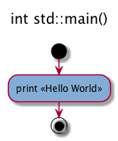
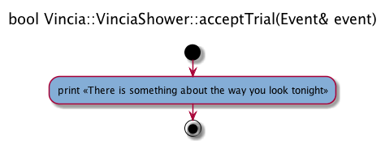

A sequence of actions builds up an activity. An activity may include different flow paths. An activity has a beginning and an end. In UML activity diagrams, these are indicated by special round symbols. Conditional branches are indicated by diamond-shaped elements.
In the code, activities are annotated functions or methods, for example the C++ main() function. (Flowgen’s annotation grammar recognizes Doxygen annotations of functions or methods. This feature will eventually allow their use as additional comments in Flowgen activity diagrams.) The actions are specified in the source code by the programmer. The beginning and end of the full activity to which the action belongs are determined by the code itself, as are the different flow paths within the activity.
type class::method(args){
CODE
//$ action 1 description
CODE
//$ action 2 description
CODE
}
Any action annotated inside a method or function triggers that the corresponding diagram is drawn.
using namespace std;
int main() {
//$ print «Hello World»
cout<<‘Hello World’;
return 0;
}

namespace Vincia {
bool VinciaShower::acceptTrial(Event& event){
//$ print «There is something about the way you look tonight»
cout<<‘There is something about the way you look tonight’;
return true;
}
}
